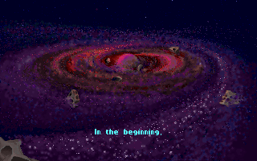
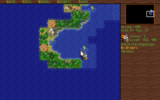
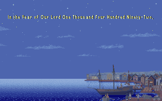
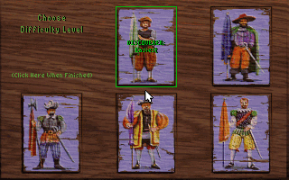
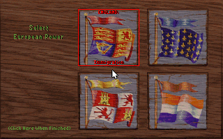
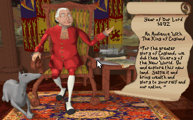
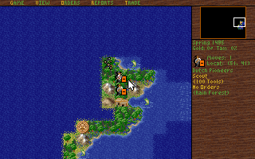

CHAPTER 7 · EVIDENCE & METHOD
How We Know
Everything on this site is checkable. It comes from three instruments: byte-level analysis of the shipped files, live instrumented runs under an emulator we built ourselves, and a community that has spent decades taking these two games apart. This chapter shows the instruments at work — and what building one of them taught us about the games.
The instrument
mddosem is a hardware-accurate PC emulator written in Rust: an 8253/8254 timer model, VGA, the 8259 interrupt controller, Sound Blaster, DOS and BIOS services, and a fast opcode-switch interpreter at the centre. Both games are pure real-mode MZ executables, so every result on this site ran interpreter-only — the dynamic recompiler never engages for real-mode code. Each live session opens with the same banner:
mddosem v0.148.0 built 2026-07-13 00:27 (9b0a641ef) pid 41416 interpreter-onlyWhat makes it an instrument rather than a player is the control pipe. A script
runner, emuscru, drives the live guest over IPC: it injects keystrokes,
waits for frames, takes screenshots, and issues raw debug commands —
READ_MEM, DISASM_SEG, REGS,
STATUS — while the game runs. The July 2026 root-cause work on
Colonization's timer bug was done entirely over this pipe, disassembling the game's
interrupt handler inside a running session. On 2026-07-18 we replayed the evidence
live: the Colonization script ran 41 commands with 0 failures, from title screen
through the load dialog to the world map, and ended with the guest parked here:
frame=1568 tick=22267 vblank_count=1568 cs:ip=120C:011D running=true halted=false120C:011D sits inside Colonization's input-polling loop — the same 120C:0122 region identified in the June 2026 playthrough campaign. The game is not merely rendering; it is waiting for a player. Mid-run, we paused the guest and read its interrupt vector table straight out of memory:
IVT[8] @0x0020 frame 33 A5 FE 00 F0 → F000:FEA5 BIOS default (still loading)
IVT[8] @0x0020 frame 601 10 00 69 11 → 1169:0010 the game's hook (title menu)
IVT[8] @0x0020 frame 1568 10 00 69 11 → 1169:0010 hook live (world map)
IVT[1C] @0x0070 70 01 00 F0 → F000:0170 the polite hook — untouched
CIV.EXE IVT[8] frame 1514 99 01 52 07 → 0752:0199 Civ's hook (BIRTH cinematic)There is a small confession in that exhibit: mddosem logs no event for a real-mode IVT write, so we cannot show you a tidy "game hooked INT 08h" log line. The memory reads are arguably stronger evidence anyway — not a claim about what the game asked for, but the observed state of the machine while it played. The same session captured the timer reprogramming as it happened, via the emulator's own PIT debug events:
07:58:27.85 DEBUG mddosem_hw::timer: PIT: mode set channel=0 mode=3 access=3 bcd=false
07:58:27.85 DEBUG mddosem_hw::timer: PIT: counter loaded channel=0 reload=07A8 mode=3Reload 0x07A8 = 1,960, so 1,193,182 ÷ 1,960 ≈ 608.8 Hz — fired once, about 300 ms into boot, and the only channel-0 reload in either Colonization run. An earlier static-analysis pass had recorded ~546 Hz for this retune; the live measurement on this binary is 608.8 Hz, and that is the number this site publishes. When measurement and analysis disagree, measurement wins — and the disagreement gets reported, not buried.
raw PAUSE + raw READ_MEM),
2026-07-18, mddosem v0.148.0. Vectors decoded little-endian offset:segment. Both hook addresses
match the 2026-06-21 playthrough journal's static findings, reproduced live 27 days later.
Determinism as a tool
The strongest single exhibit is the quietest. Four screenshot pairs — one taken by the 2026-06-21 test campaign, one by the 2026-07-18 live session, roughly seventy emulator versions and 27 days apart — are MD5-identical:
82090cf84527d04b06b4ac8aaf40f5b8 col_live_title.png == colonization_title_menu.png
d0375aace50ada3b698557772c77d72b col_live_load_dialog.png == colonization_load_dialog.png
f452aed9bb37a64bc381b14f2032dadb col_live_loaded.png == colonization_loaded_colony09.png
09a8d92b5e49b103c3073053b99df146 civ_live_graphics_prompt.png == civ_boot_graphics_select.pngSame guest inputs, pixel-for-pixel identical VGA framebuffers, identical PNG bytes,
across different builds of the emulator a month apart. (The world-map pair differs
only by mouse-cursor position — 122,834 versus 122,628 bytes.) That reproducibility
was earned, not free. In April 2026 Colonization's crashes moved around from run to
run — 2384:F082 one time,
2384:FA18 the next, both inside the game's own
S$MPSLOG sprite buffer — which makes root-causing nearly impossible. The
hunt for the entropy source found DOS function INT 21h AH=2Ch (get time) falling back
to the host's GetLocalTime(), plus CMOS/BDA boot seeding and hash-map
iteration order. The guest's behaviour was literally timestamp-dependent. An
eight-change determinism fix made three consecutive Colonization runs byte-identical
— and every later diagnosis on this site stands on that foundation. When the machine
is deterministic, a screenshot is a checksum of the whole causal chain that produced
it.

What the games taught the emulator
Compatibility bugs are emulation truths: every time one of these games misbehaved under mddosem, the fault line ran through something real about 1990s hardware that we had modelled wrong — or something real about the games that nobody had documented. These are our war stories, each with its one-line moral.
MDD-00036 — the freeze that got worse the faster we emulated
Colonization's new-game voyage cinematic froze — and froze more often at
higher emulated speeds, which is the wrong direction for any ordinary timing
bug. The root cause took two campaigns to find, and it was ours. Colonization's
timer handler tail-jumps to the saved BIOS vector every 30th tick, reconstructing an
era-correct BIOS heartbeat — nominally 18.2 Hz — underneath its own fast clock. Our HLE BIOS
implements that tick service as an address trap: a stub at
F000:FEA5 whose following byte, 0xF1, is a
marker the interpreter should intercept. But the interpreter checked for F000 traps
only at instruction-batch boundaries — and a chain landing mid-batch sailed
straight through, executing 0xF1 as the obscure x86 instruction ICEBP
and raising a spurious INT 1 instead of a BIOS tick. The probability of landing on a
boundary falls as batches grow, so raising cycles/ms starved the BIOS chain harder:
instrumentation counted ~35,000 game-ISR entries, 1,145 expected chains, and
17 serviced — a BIOS tick limping at 0.1–0.9 per second instead of
18.2. It even explained a historical mystery: --cycles 20M hung, 23M
worked, 24M hung. DOSBox-X was immune all along because its BIOS handler is an
executable callback opcode, not an address trap. The fix recognises an
INT 1 originating at F000:FEA7 and runs the BIOS tick
service instead; it was closed two-eyes with a red-side mutation test and a
regression that deliberately pumps the batched path — the single-step path
could never reproduce the bug. Moral: an address trap is not an instruction,
and batch boundaries are architecture.
The voyage that stays frozen — on purpose
Fixing MDD-00036 cured the speed-dependent freezes, but the new-game voyage
cinematic ("Year of Our Lord 1492") still sticks on frame 1, spinning at
145D:0032 on the BIOS floppy-motor byte at
0040:0040. In June 2026 we implemented an emulator-side
fix — decrement that byte on every hardware timer tick — and it worked: the cinematic
ran. Then we deleted it. DOSBox-X's source decrements
0040:0040 only inside the vectored BIOS INT 08h handler,
never behind the game's back, and a write-instrumentation run proved exactly one
write to that byte in our whole session: the game's own mov. The
remaining divergence is game-state, and the oracle says the fault is not in the
emulator — so we declined to patch, and we reach gameplay through LOAD instead,
as demonstrated live above. (The June campaign's confident misdiagnosis of this
freeze — later overturned by the July disassembly — is preserved in the repo as one
of our best-documented wrong turns.) Moral: obey the oracle, even when the
patch "works".

The phantom upper memory that never existed
For a while, Colonization under mddosem took a strange split-memory allocation path. The cause: whenever a program called INT 21h AH=58h/AL=03h (link upper memory blocks), our DOS conjured 32 KB of UMBs out of nothing — a configuration no real 1994 PC ever had, because real UMBs came with EMM386's ~25 KB of conventional-memory overhead attached. Colonization probed, found the phantom memory, and obediently walked into a buggy corner of its own allocator. The fix made link-UMBs a no-op when no UMB provider exists. Moral: emulate configurations that existed, not configurations that flatter.
Too much RAM is a fatal condition
Give Colonization 629,728 bytes of free conventional memory — more than any real
1994 system with drivers loaded — and it dies in Microsoft C's
run-time error R6003, nominally "integer divide by 0", in truth an IDIV
quotient overflow (the repo measured a quotient of 711,567, far past the 32,767 a
signed 16-bit register holds). The game's internal layout places its compressed
cache and a decompression target a fixed 18,752 bytes apart, and in an over-large,
too-clean memory map the in-place decompression overrun has nothing to stop it.
Moving the emulator's first memory block to base 0x0800 —
607 KB free, typical 1994 driver overhead — restored the geometry the game was
designed inside. Moral: the game only works because the machine is
small.
What one 1991 intro flushed out
Chasing Civ's title sequence fixed four unrelated emulator bugs:
- The VGA vertical-sync pulse was 18× too long — port 0x3DA bit 3 held for 8% of the frame against real hardware's 0.45% (2 of 449 scanlines) — so Civ's 16-retrace timer calibration read massively inflated values.
- An I/O-delay exemption meant for one sound card accidentally matched every port from 0x300 to 0x3FF, so guest time never advanced inside polling loops on the VGA status port or the OPL chip.
- A keyboard-wait stub in the BIOS segment was unreachable dead code: the interpreter's HLE break fired before executing it — 714 million loop iterations with the cycle counter frozen.
- The BIOS floppy-motor countdown at 0040:0040 was never decremented at all; the fix mirrors DOSBox-X's check-before-decrement, saturate-at-zero behaviour.
Moral: a good intro is an audit — one 1991 animation exercised four subsystems to destruction.
MDD-00037 — the intro that ran at 6% speed
Civ reprograms the system timer to reload 0x4280 =
17,024 — 70.09 Hz, the VGA frame rate — and paces its intro with tick-counted
busy-waits. Under a fixed "Pentium" budget of 25,200 cycles/ms, each 70 Hz wait
became roughly 20× more emulated work than on the 386-class machines the game was
tuned for, and the interpreter sustains only ~5 MIPS on Civ's palette-animation
scenes (against ~45 MIPS on F1GP): the cinematic crawled at 3.4 fps, about 6% of
real time. The A/B test was decisive — --speed 386 ran it at 70.12 fps
— and the durable fix adopted DOSBox-X-style adaptive cycles (a 3,000 cycles/ms seed
plus ramp) as the bare-DOS default: 64–70 fps. Moral: when software paces
itself against the machine, emulate the pace, not the spec sheet.
| Finding | Symptom | Root cause | Moral |
|---|---|---|---|
| MDD-00036 | Froze more at higher emulated speed | BIOS-chain jumps landing mid-batch ran trap byte 0xF1 as ICEBP | Batch boundaries are architecture |
| Voyage freeze | New-game cinematic stuck on frame 1 | Game-state divergence; oracle (DOSBox-X source) exonerates the emulator | Obey the oracle |
| Phantom UMBs | Bizarre split-memory allocation path | Emulator conjured 32 KB of UMBs no 1994 PC had | Emulate machines that existed |
| R6003 crash | Divide error with 629,728 B free | Fixed 18,752-B buffer gap; in-place decompression overruns in clean, roomy memory | The game needs the machine small |
| Civ intro audit | Stalls, livelocks, frozen cycle counter | VSync pulse 18× too long; I/O-delay mask; dead stub; BDA 40:40 never ticked | One intro, four subsystems |
| MDD-00037 | Intro at 3.4 fps (6% of real time) | 70 Hz busy-waits ~20× oversized under fixed-Pentium cycles | Emulate the pace, not the spec sheet |
Standing on shoulders
Our byte-level and live-run lanes lean, at every turn, on people who took these games apart first — most of them for love, over decades. Credit where it is emphatically due:
- darkpanda (CivFanatics) — the "Civ1 … explained" series (map generation, land value, randomness, AI movement), the SVE/MAP/PIC format threads, the CIV+IDA tutorials, and JCivED, the save/EXE editor that anchors Civ 1 internals research.
- Gowron & Dack — the CIV.EXE data tables and the hut/special-resource patterns (2009).
- tupi — the diplomacy routine, rendered in C-like notation from disassembly (2022).
- CivOne (SWY1985) — the open-source C# remake that ports darkpanda's algorithms, and OpenCiv1 (rajko-horvat) — the whole of CIV.EXE disassembled into compilable C#.
- ScummVM's MADS engine — whose pfab.cpp is a C port of MicroProse's own compression source,
pFABcomp.asm(David McKibbin, 5 September 1992, "MPS Labs Graphic Library") — the closest thing to reading the original engineers' shoulder notes. - Paul "dreammaster" Gilbert — rtlink_decode and the definitive write-up of RTLink's overlay formats.
- The Colonization save-format community — nawagers/Colonization-SAV-files, against which our byte-exact decomposition of colony09.sav was checked.
- Jimmy Maher, The Digital Antiquarian — "The 640 K Barrier", the definitive narrative of the memory wall.
- Quote Investigator — the verdict on "640K ought to be enough for anybody": no primary source, and Gates denies it.
- Sid Meier, Sid Meier's Memoir! (2020) — first-hand history, including the refutation of Nuclear Gandhi.
- Johnny L. Wilson & Alan Emrich — Sid Meier's Civilization, or Rome on 640K a Day (Prima, 1992): the theme of this site, on a bookshelf, thirty-four years early.
Gallery
The rest of the evidence reel — archive captures from mddosem's own 2026-06-21 test campaign, each scene pixel-deterministic under replay.




Keep pulling the thread
The instrument has its own story — how a Rust interpreter, a deterministic DOS, and a trace ring buffer got accurate enough for a 1994 game to trust them — and the almanac's mddosem write-up tells it. Everything in these seven chapters traces back to a file offset, a live memory read, or a named community source; where we relied on a model or an unproven hypothesis, the page says so. If you find a byte we got wrong, we would genuinely like to know. Corrections welcome — errors are ours.
Sources for this chapter — Runtime: live instrumented runs of 2026-07-18 under mddosem v0.148.0 (emuscru IPC READ_MEM/PAUSE, mddosem_hw::timer debug events, framehash CRCs, MD5 manifests); Repo: the mddosem bug ledger (MDD-00036, MDD-00037) and the 2026-04→07 investigation journals; Community: the credits above.